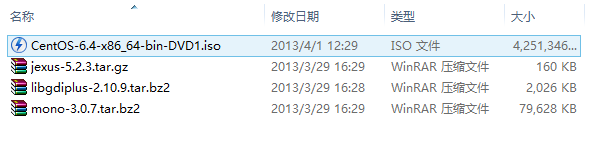
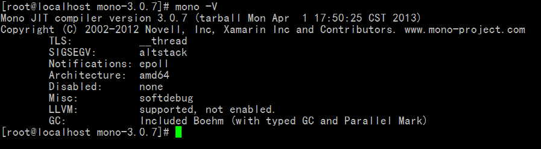
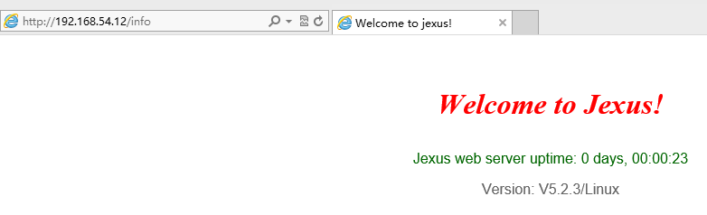
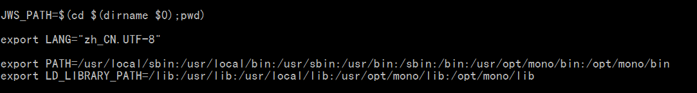

Linux下面跑.NET程序，听起来有点疯狂，不过又是那么的有前途。Linux作为服务器，它的优势是不容置疑的，可以说类Unix系统（Linux、Unix……）天生就是适合做为服务器的操作系统，它的稳定性、它的高效、它的低成本，这都是Windows所不能媲美的。
不说太多了，我们直接进入我们讨论学习的话题吧,这里推荐几个Linux.net的学习地点：mono中国，Linux DotNet大本营，jexus Web Server 技术博客。
同时，这里也推荐张善友先生的博客，那里有很多关于Linux.NET的文章。
本回合，我们主要讨论学习：
1、什么是mono
2、为什么要用mono
3、如何在Linux中部署一个.NET的运行环境
4、部署时我们需要注意什么，以及对一些关键步骤的解析
1、什么是mono
关于什么是mono，我想无论我怎么说，应该都不会比官方的解释，或者是百科更加详细；我这里就简单说吧，Java之所以能够跨平台运作，是依赖与Java的虚拟机JVM，而.NET之所以只能够在Windows中跑，同样是因为.NET运行需要依赖与Framework的Runtime（公共运行时），那如果能够在Linux同提供适合于.NET运作的环境（包括CLR等），那.NET也可以在Linux中跑起来了，这就是mono了。
2、为什么要使用mono
为什么使用mono，原因有很多，不过归结起来，我个人认为以下这是最重要的：
（1）、作为服务器来说，如果能够实现一模一样的功能的，还是主推Linux。为什么呢？我列举了几个实例：
首先，如果服务器需要打补丁，作为Windows服务器，你打完补丁之后必须重启，这一定程度上会对你的业务造成一定程度上的影响。
其次，我们经常会听到Windows会中毒，特别是作为Web服务器和邮件服务器，我们不知道用户会给我们上传一些什么东西上来，相反，我们却很少会听到Linux中毒这么一个说法；这是由于Linux存在着太多的发行版本，不同版本之间编译后的软件无法相互调用，因此，如果能够感染A版本的Linux病毒无法感染B版本的Linux，这在很大程度上削减了病毒的危害性。
再者，作为服务器，我们会尽量希望自己的系统更加的轻量化，更加的高效，和更加的稳定；Linux对于我们的要求，都提供了，我们可以定制的安装软件和服务，对于一些不必要的服务我们可以直接不安装（注意，是直接不安装，而不是安装之后再关闭），相反，如果采用Windows的话，一上来就啪嗒啪嗒的安装一大堆软件和服务，无论你用不用得上，先给你安装；也许这个可以让您的服务器充当更多的角色，但是我们更加希望服务器能够做到单一高效而不是面面俱到。
最后，Linux运行对于硬件的要求比较低，这也是由于Linux抛弃桌面环境（作为服务器，我们不应该安装XWindow）和没有太多不必要的服务所决定的，而Windows则显得矜贵多了，硬件配置低一点还不一定能够正常运作。
（2）、从成本考虑：
一般部署在Windows中的.NET程序都是采用 “Windows Server版本 + IIS + MS SQLServer” 这确实是.NET的黄金组合，但是，值得遗憾的是，它们都是要收费的，系统要收费，数据库要收费；作为大企业来说，上千上万台服务器，如果都采用这种模式的话，那将是一笔巨额的开销；对于小公司，资金对于它们来说本就是一个难题，能省下来的基本上都希望省下来，如果放着一个能够达到相同功能而且免费的模式不用而采取这种付费模式，那太说不过去了。
而如果我们采用mono，把.NEt部署在Linux中，我们可以采用以下的组合：“Linux + mono + jexus（Apache/nginx + XSP2）+ MySql(PostgerSQL或其他免费数据库)”，所有的这些无论是否开源（jexus不开源）都是免费的。
作为老板，你会选择哪种呢？
3、mono环境的部署
介绍再多也不过是纸上谈兵，实战才是硬道理。工欲善其事必先利其器，要实操，还必须先要有这个环境，下面进入本回合的重点环节，Mono环境的配置。
网上也有大量关于mono环境搭建的帖子，基本上都是搭配以下这两种类型的mono环境：以免费不开源jexus作为服务器软件的mono环境 和 以Apache（或nginx）作为服务器软件的mono环境，具体选择哪款环境读者可以自由选择。选择前者的，可以参考张善友先生的《32和64位的CentOS 6.0下 安装 Mono 2.10.8 和Jexus 5.0》；而选择后者的读者则可以参考《CentOS 6.0 安装 MONO 2.10.8》。
这里我们就选择前者[选择的原因我打算放到下一回合再来说明]。
版本选择，均选择当前所能下载的最新版本（需要下载的可以链接下载）：
操作系统：CentOS-6.4-x86_64
libgdiplus：libgdiplus-2.10.9
mono：mono-3.0.7
jexus：jexus-5.2.3（这里最新版其实是jexus-5.3.0 beta3，不过基于稳定性，我选择了最新的稳定发行版）

首先，先用Hyper-V虚拟机安装好系统，各位读者也可以选择用VM机或者其他虚拟机来安装操作系统，问题都不大。
装好Linux系统之后，我们正式的来搭建mono环境，我们把需要的源码包都上传到Linux中
首先，先用Hyper-V虚拟机安装好系统，各位读者也可以选择用VM机或者其他虚拟机来安装操作系统，问题都不大。
装好Linux系统之后，我们正式的来搭建mono环境，我们把需要的源码包都上传到Linux中
（1）、更新系统 yum update （这里我就不更新了，因为都是最新版的东西了）
（2）、通过yum安装编译mono所需要的库
yum -y install gcc gcc-c++ bison pkgconfig glib2-devel gettext make libpng-devel libjpeg-devel libtiff-devel libexif-devel giflib-devel libX11-devel freetype-devel fontconfig-devel cairo-devel
（3）、编译安装Libgdiplus
tar jxf libgdiplus-2.10.9.tar.bz2
cd libgdiplus-2.10.9
./configure --prefix=/usr/local/mono/
make && make install
echo "/usr/local/mono/lib" > /etc/ld.so.conf.d/mono.conf
ldconfig
（4）、安装mono
由于mono比较大，因此解压和编译安装都需要比较长的时间
tar jxf mono-3.0.7.tar.bz2
cd mono-3.0.7
./configure --prefix=/usr/local/mono/
make （如果下载的是最新版本，make过程中出现“mcs not found”的错误，执行 make get-monolite-latest 后继续make）
make install
ldconfig
echo PATH=/usr/local/mono/bin:$PATH>>~/.bash_profile
source ~/.bash_profile
执行 “ mono -V ”如果可以看到mono的版本信息，则表明编译安装成功

（5）、安装jexus
安装jexus比较简单，jexus安装分为全新安装和升级安装两种，由于我们这里是全新安装，所以只讲全新安装部分，升级安装可以阅读jexus中自带的readme文档，里面有详细介绍。
tar xzf jexus-5.2.3.tar.gz
mv jexus-5.2.3 /usr/local/jexus
cd /usr/local/jexus/
./jws regsvr （这里注意，如果采用最新版本的jexus【也建议去jexus官网下最新版本】,则只需直接执行./install /usr/local/jexus 即可）
ln -s /usr/local/mono/ /opt/mono
至此，jexus就安装完毕了
输入操作 “./jws.start”启动服务器，输入网址XXXX/info，得到以下画面，表明全部安装成功。

4、部署需要注意的事项与解释
上回合我们只是单纯的部署讲怎么部署mono，并没有对部署mono中每一步的作用做出解释，很多读者或许部署完了还不明白到底怎么回事，因此这回合我们就上回合的操作作出解释，并了解重点需要注意哪些事项。
（1）、部署 libgdiplus 时，执行最后一步是什么意思？
上回合中，我们部署 libgdiplus 时执行了一步 “echo "/usr/local/mono/lib" > /etc/ld.so.conf.d/mono.conf”，这一步的作用其实到了部署mono时，执行 ldconfig 才正式的发挥作用。由于我们部署libgdiplus 和mono没有部署到系统默认的/usr 中，因此系统是不会默认的到我们部署mono的文件夹中搜寻和读取里面的动态库文件，这时，我们需要在/etc/ld.so.conf.d/文件夹中，手动的添加mono动态库文件夹的地址，再执行 ldconfig 来让系统能够找到我们的动态库文件。
（2）、部署mono后，执行 ldconfig 很重要
编译部署mono之后，我们会得到大量需要加载的动态库文件，而这些动态库文件，我们再下一步的时候就需要用到，因此需要让系统重新加载。（如果没有重新加载，有可能在部署jexus的时候会出现各种各样的问题）
（3）、部署mono之后，需要把bin目录的路径加入到环境变量PATH中
原理跟安装完jdk之后，需要在环境变量注册是一样的。
（4）、部署jexus需要执行注册
部署jexus的过程相当简单，只需要解压，然后把文件夹拷贝到我们想要它存放的目录就可以了，不过在此之后，我们需要注册全局程序集（./jws.regsvr），这个很重要
（5）、为什么注册完jexus之后需要添加一个软链接
事实上，本来这个软链接是不会写上来的，因为之前部署mono时，注册完jexus了，服务就可以正常的跑起来了。但是这次不同，注册完之后，“./jws.start”之后，服务并没有起来，执行"./jws.stop"系统报了个notfoundXXX（找不到XXX）。于是用vi随便打开了其中的一个脚本，注意到了如下的代码：

很明显，jws脚本哪里写有了寻找mono的搜寻路径，而恰好，我们部署的mono都不在这几个路径中，因此，jexus找不到想要的bin目录下的文件，所以就服务起不来或者报了个notfound。这时，我们只要在/opt/mono/ 中（当然Path中的任意一个都行，或者你也可以自己手动的一个一个脚本文件添加上mono的目录路径）添加一个软链接，把它链接到我们部署mono的目录下，jexus就能够顺利的找到想要的文件。
好了，要讲的暂时就这么多，我们的Linux.NET环境就基本搭建起来了。各位读者此刻时候有一种跃跃欲试的感觉，如果有，欢迎您马上行动，纸上得来终觉浅绝知此事必躬行。
此外：由于本人对Linux.NET接触时间并不太久，手上也没有比较有效的资料，因此很多时候都是采取摸着石头过河的方式来学习研究，如果在讨论学习的过程中有任何错漏的，欢迎各位读者能够指正出来，同时，如果各位读者有任何的意见或者建议，也欢迎大家提出。
下一回合，我们将讨论学习：jexus作为Linux下基于mono的.NET服务器，其优势在哪？jexus的配置与特色功能，还有其中的一些注意事项与小技巧。